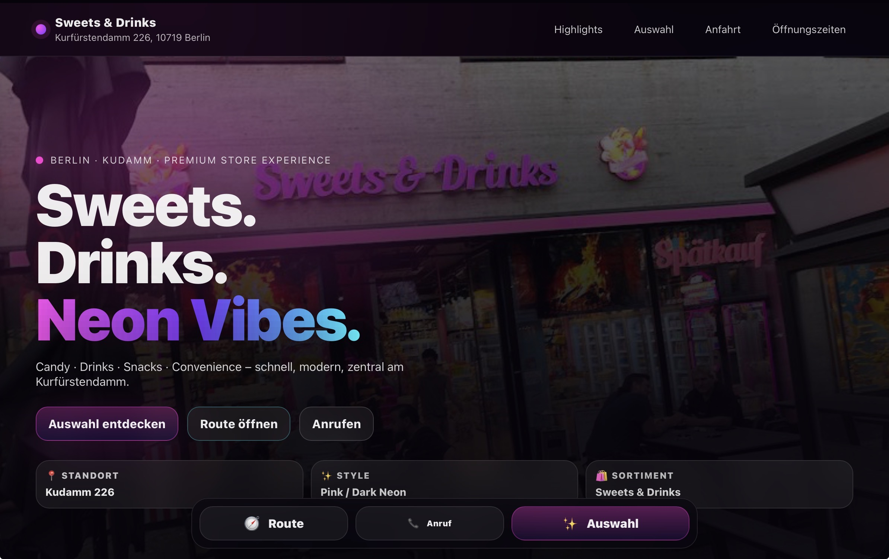
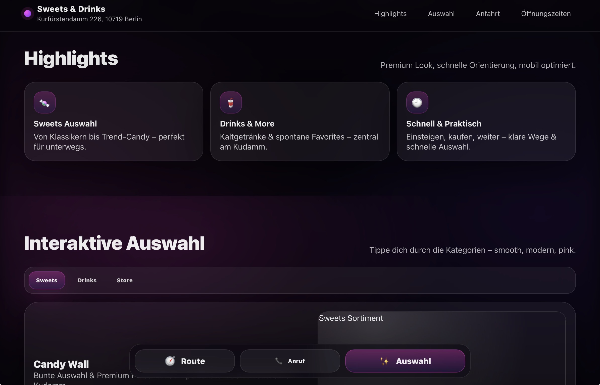
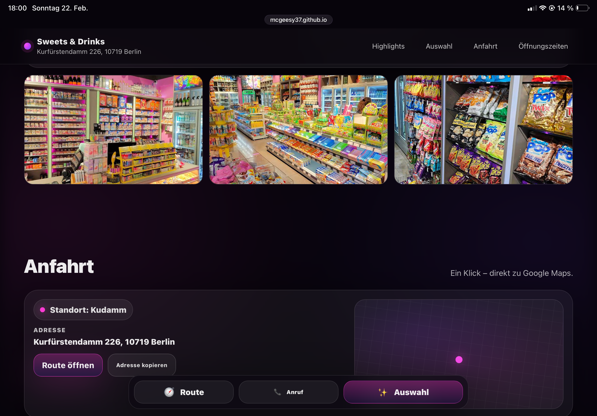
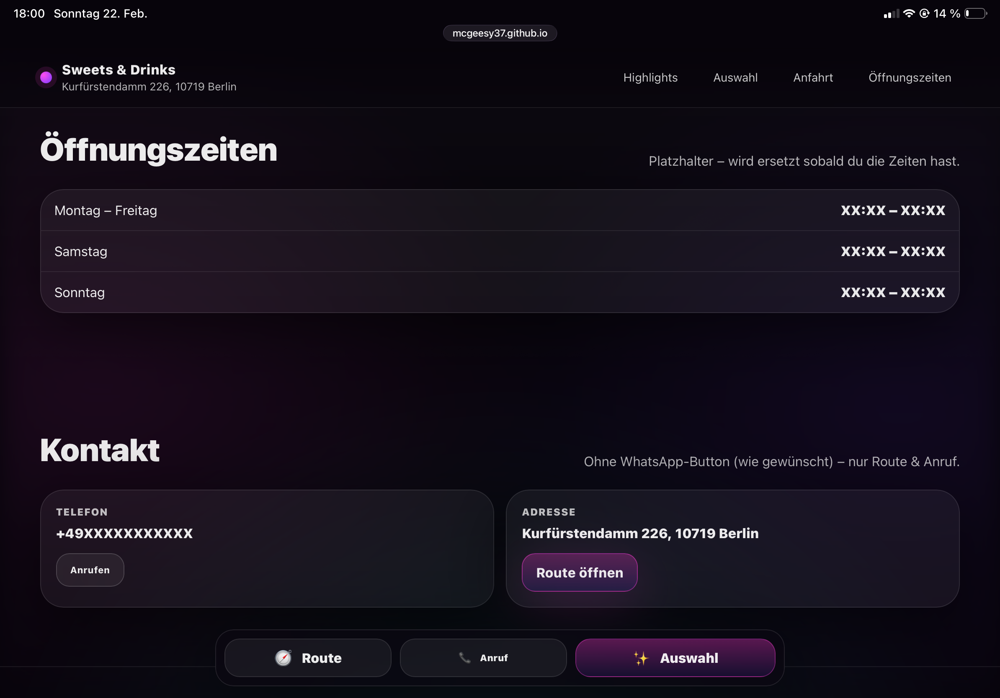

Website für Spätis & Kioske
Moderne Websites für Spätkäufe in Berlin. Perfekt geeignet um Öffnungszeiten, Standort und Angebote online sichtbar zu machen.
Beispiel einer Spätkauf Website
So könnte eine moderne Website für einen Späti oder Kiosk aussehen.




Was eine Späti Website enthalten kann
Wichtige Funktionen für Spätkäufe und Kioske.
Google Maps Karte
Kunden finden den Späti sofort über die Website.
Öffnungszeiten
24/7 Öffnungszeiten direkt sichtbar.
WhatsApp Kontakt
Kunden können schnell Kontakt aufnehmen.
Mobile Optimierung
Perfekte Darstellung auf Smartphones.
Wonach Ihre Kunden suchen
Ein Späti lebt von Laufkundschaft und Nachbarschaft. Gesucht wird spontan, fast immer vom Handy und oft spät abends.
Was hat jetzt noch offen?
Suchen wie „Späti in der Nähe“ oder „Späti Kreuzberg offen“ entscheiden in Sekunden. Aktuelle Öffnungszeiten sind das Wichtigste auf der Seite.
Gibt es das hier?
Kalte Getränke, Snacks, Tabak, Eis. Wer sein Sortiment zeigt, holt Kunden ab, die etwas Bestimmtes suchen.
Paket abholen oder abgeben
Viele Spätis sind Paketshop. Das ist ein starker Grund für Besuche und gehört gut sichtbar auf die Seite.
Wie komme ich hin?
Adresse, Karte und die nächste Haltestelle. Für Touristen und Neue im Kiez ist das oft der entscheidende Punkt.
Was eine Späti-Website können muss
Für einen Späti ist das Google-Unternehmensprofil mindestens so wichtig wie die Website. Beides arbeitet am besten zusammen.
Öffnungszeiten an einer Stelle
Die Zeiten stehen ganz oben und stimmen mit dem Google-Profil überein. Widersprüchliche Angaben kosten Kunden und Vertrauen.
Sortiment und Services
Getränke, Snacks, Paketshop, Kartenzahlung. Kurze Übersicht statt langer Texte.
Fotos vom Laden
Ein Foto von außen hilft, den Laden auf der Straße wiederzuerkennen. Ein Foto vom Kühlregal sagt mehr als jede Liste.
Mehrsprachig
In Berlin kaufen viele Touristen ein. Eine kurze englische Version kostet wenig und hilft spürbar.
Häufige Fragen
Was kostet eine Website für einen Späti?
Für einen Späti reicht in der Regel das Starter-Paket für 349 €: eine Landingpage mit Öffnungszeiten, Sortiment, Karte und Kontakt. Die Umsetzung dauert meist nur wenige Tage.
Brauche ich neben dem Google-Profil überhaupt eine Website?
Das Google-Profil bringt die meisten Besucher. Die Website ergänzt es um Sortiment, Fotos und Services und wird bei Suchen nach bestimmten Produkten gefunden.
Kann ich die Öffnungszeiten selbst ändern?
Ja, auf Wunsch so, dass Sie Zeiten ohne technisches Wissen anpassen. Wichtig ist, sie im Google-Profil gleichzeitig zu ändern.
Geht das auch für mehrere Filialen?
Ja, jede Filiale bekommt ihren eigenen Abschnitt mit Adresse, Zeiten und Karte.
Website für Spätkauf erstellen lassen
Wir erstellen moderne Websites für Spätkäufe und Kioske in Berlin.
Perfekt geeignet für:
- Spätkauf
- Kiosk
- 24h Shops
- Getränkeshops